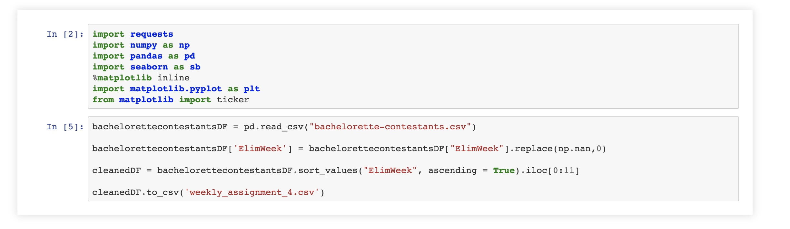

References
An Optimal Age to Marry? Age at Marriage and Divorce Risk in Europe and the US. (n.d.). Retrieved from
https://ifstudies.org/blog/an-optimal-age-to-marry-age-at-marriage-and-divorce-risk-in-europe-and-the-us#:~:text=Individuals who marry when they,at age 30 to 34.
Melnyk, D. (2018, March 20). The Maturity Of Adult Males. Retrieved from
http://www.manofthehourmag.com/culture/the-maturity-of-young-men
Wilcox, W. B. (2019, May 03). Knot Now: The benefits of marrying in your mid-to-late 20s (including more sex!). Retrieved from
https://www.washingtonpost.com/news/inspired-life/wp/2015/02/27/knot-now-the-benefits-of-marrying-in-your-mid-to-late-20s-including-more-sex/
My Work
1. Code from Python to filter only the winners from the data set and their age

2. Excel Sheet to calulate average and produce graph (Saved pandas dataset from Python as csv and used in Excel)